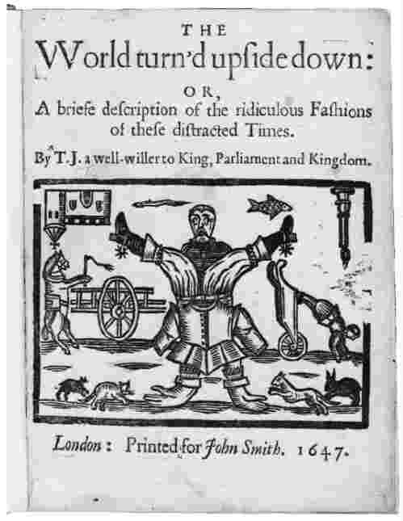

有句谚语说，“千里之行，始于足下”。重建关于乔治·伯德特的某些历史，让我们走出了第一步。现在我们要去向何方呢？
历史学家走过的旅程，以及他们就其兴趣所在而讲述的故事，在长度上各不相同。如我们所知和所做的那样来讲述关于伯德特生平的故事，是完全可能的。但每个人的一生都会与其他人相交叉，而这些历史又与更宏大的变迁相交叉。我们被漫长旅程中的开放空间和在伟大旅程中寻找意义、探求论据的可能性所吸引。伯德特至少是两个更宏大的故事中的一部分，这两个故事即英国内战和美洲殖民。我们也许想知道英国是怎样陷入内战的，或者试图理解在一个勇敢的新世界开拓殖民地——对于被卷入的人们和后来的党派——有什么影响。我们也许还会思考伯德特是怎样适应这些故事——甚或改变它们的。要这样做，我们就得找到一种讲述更宏大故事的方式。
研究历史需要几种类型的猜测。我们已经看到了试图在现存证据中“填补空白”的过程。本章将要探讨的是一个更深层的过程：怎样将大量的材料综合起来，以及用宏大故事所呈现的轮廓去构造什么。在做这件事的时候，历史学家不仅知道随着时间流逝而发生的变化，而且也知道其中的连续性，他们力图解释这些事情。不过，他们还知道曾经走过这条道路的人们，知道其他历史学家的叙述和主张。对这些都必须给出态度：同意、推翻或忽略。创造一个故事的过程不仅仅是把一块砖放到另一块砖上面，直到一座建筑物出现；它需要确定所描述的事件的原因和结果，处理其他历史学家已经说过的内容，并指出这个故事意味着 什么。
让我们从英国内战开始吧。历史学家根据现存证据对这场战争做出了描述，就像人们从《议会记事簿》中重建关于伯德特的记载一样。但它当然意味着多得多的工作——和某些更艰难的选择。人们所关注的证据的类型，无疑会影响被讲述的故事。比如说，如果有人主要关注叙述性的记载、王室的文献和议会的文件，呈现出来的故事就显然是政治性的：17世纪的第二个二十五年里，国王查理一世怎样被卷入一张政治、经济和宗教矛盾之网，进而导致战争于1642年在国王和议会之间爆发。查理一世于1649年被处决，英国暂时由议会统治，直到奥利弗·克伦威尔担任“护国公”之职（对共和国领袖来说，这是一个奇怪的君主式的职位）。1660年，查理二世夺回英国王位。这是一个主要由事件组成的故事：处决国王，双方之间的战斗，共和国内部的政治斗争，新君主的胜利。政治史学家必须在某种程度上解释是什么引起了这些事件，他们所提供的答案因其兴趣而有所不同。但尽管如此，大多数人都同意，查理一世的确是一个不称职的君主，他无法将议员们团结在一起；不同的“统治”观念之间存在张力，特别是在君主（对政府拥有最高的控制权）与调停机构（议会在其中拥有更大的发言权）之间；国外事件（尤其是信仰天主教的爱尔兰，但也包括欧洲大陆）影响着在英国发生的事件。
在这个“政治”故事中，变化的原因是什么，它又意味着 什么？将所有的政治史学家都归入一个阵营是不公平和不准确的。但是这样说也许是合乎情理的，即在“政治”故事当中，变化是通过人的能干或无能来实现的（一个无能的查理一世，一个起初有能力的克伦威尔），它受到意识形态力量的影响（君主制对共和制），并受制于某种偶然性（当战争意外失利的时候）。它还很好地构成一个“宏大叙事”（即延续几个世纪的非常宏大的故事），譬如议会民主之发展中的一部分。这样一种宏大叙事所宣称的“意义”——如第三章结束时所提到的——就是英国政治文化的“优越性”。这种意义也许是明确宣示的，也许潜藏在讲述故事的结构和评论中。对某些政治史学家来说，事件的原因和意义并不需要明确说出来：仅仅叙述事件的过程就足够了。他们感到，叙述本身足以使“发生之事”清楚地呈现出来。
在其最原始的状态下，政治史仍然坚持着19世纪晚期的模式：叙述“伟大的事件”，评判“伟人”（或者其反面，“真正可怕的人”）。否认某些男人和女人（虽然很奇怪，后者被提及的次数没有前者那么多）可以被称作“伟大”，这似乎很无礼，但使用这个称号的依据是什么、它是否说明了被讨论者的情况抑或更多地代表了贴标签的历史学家的偏好，却不是那么清楚。比如说，在什么时候“伟大”逐渐削弱，而单纯的“能力”开始发挥作用？在历史上“有能力的人”就没有扮演任何角色吗？我们正在谈论的“伟大的男人（和女人）”是由谁选择的？我最中意的几位是：安娜·康尼娜 [1] ，一位12世纪的拜占庭公主，她撰写了最优美的历史著作之一《亚历克西乌斯传》；梅诺乔 [2] ，一位17世纪的磨坊主，以其关于上帝和造物的极其个人化的观点挑战了宗教法庭；以及埃玛·戈德曼 [3] ，本世纪初一位积极的无政府主义者，曾经被描述为“美国最危险的女人”，她对俄国革命的评论是“没有舞蹈，就让我出局”。我有充分的证据表明他们的“伟大”，但我确信你们也有同样正当的理由做出自己的选择。“伟人”的数目之多令人惊讶——或许选择伟大的游戏更类似于挑选各个时代的十佳唱片。
更重要的是，历史原因的“伟人”论——事实上，还有些理论关注的是那些不那么伟大的人所做的决定——取决于这样一种信念，即导致事件发生的是掌握权力的个人所做的或好或坏的决定。否认政治领袖在行使权力，否认他们的决定会对他人的生活产生影响，是很愚蠢的；但是忘记其余的普通人民所做的反应和决定，是否同样愚蠢呢？战役的胜利也许是经验丰富的指挥官的胜利，但它也是那些勇于战斗和不惧死亡的人的胜利，鼓舞人们去战斗的观念的胜利，支持那些部队的经济制度的胜利，为他们提供武器的生产基地的胜利。无论如何，单独一次战役就改变了事件进程，这种情况多久会出现一次呢？英国内战包括多次战役和各种冲突，所以也许该问的问题是：人们将战争继续下去的愿望有多强烈？
过去发生的事情无疑要受到人们所做决定的影响——甚至支配。但是人们想要做什么与这些想法所产生的实际后果，常常不是一回事。这里时间尺度是一个因素：1517年，当马丁·路德 [4] 把他的九十五条论点钉在维滕贝格教堂的大门上的时候，他当然是想抗议天主教会内部的某些行为（在他之前，许多人其实已经采用过同样的公开方式）。但要说路德打算改变欧洲的宗教形态，或者在清教与天主教之间掀起无数的宗教战争，这就不一定了。不能让路德独自为后来发生的事情负责：因为他的九十五条论点有一群支持者 ，他们的选择（以及那些选择的无法预见的后果）也会对事件产生影响。而且，那些选择和后果是在社会结构、经济变迁和文化观念的背景下上演的。
想想社会，我们就会被带回英国内战。社会史学家与政治史学家关注的证据往往不同，尤其是地方性的政府记录，在其中更有可能找到与普通百姓有关的信息。这种信息有些可以用作经济分析——比如去考察纳税申报单、买卖清单和收支记录。20世纪，经济变迁的图景引起了历史学家越来越多的兴趣，这主要是由于卡尔·马克思的影响。马克思主义关于内战的经典叙述，讲述了一个崛起的“中等阶层”（自由民、商人、地位比贵族低的有钱人）反抗旧精英（贵族、地主、国王）的阶级冲突。在这个宏大故事中，战争变成了“向资本主义过渡”的整体（另一个“宏大叙事”）中的一部分：从“封建”社会向资本主义转变的重要而长期的过程——前者依靠传统和等级制来运行，后者则是用工资取代了义务，追逐个人利益胜过了传统的保守主义。
当然，马克思主要是作为一位政治思想家而被人们记住的。但他和他的伙伴弗里德里希·恩格斯也对历史解释感兴趣，他们试图说明社会在长时期内如何以及为何发生变化。他对历史编纂的影响可能比那个世纪的任何其他人的都要大。虽然历史学家用了很长时间才掌握马克思的社会、经济和文化思想，但之后他对社会史学家来说变得异常重要。在英国，从20世纪30年代以来，马克思主义历史学家开始精力充沛地写作。诸如埃里克·霍布斯鲍姆 [5] 、多萝西·汤普森 [6] 和杰出的E.P.汤普森 [7] 等男女学者将这种影响传给了美国的历史编纂工作。在法国和意大利，马克思在社会科学领域产生了深远的影响，而此时德国却与其最有名的后裔之一保持着某种分裂关系。在俄国，马克思对历史编纂的影响（或者说，其实是影响的某种形式）超过了任何其他观点。
事实上，今天所有的历史学家都是马克思主义者（marxists，m是小写的）。这并不意味着他们都是“左翼”（远非如此），或者他们必须承认或记住这种恩惠。但是，马克思思想中的一个关键要素已在历史学家的观念中如此根深蒂固，以至于它事实上已经被视为理所当然了：这一洞见就是，社会和经济环境影响着人们对他们自己、他们的生活及其周围世界进行思考进而采取行动的方式。这并不是在暗示他们完全受到这些环境的控制。马克思本人写道：
对英国内战或任何其他主题的一切解释几乎都理所当然地认为，有必要对事件发生时的社会状况，以及参与者的经济地位和兴趣加以考察。不是每个历史学家都会继续谈论“阶级”或者从封建主义向资本主义的过渡，但他们会，比如说，对特定群体的“崛起”（通常是指经济和政治影响的扩大）产生兴趣，无论是“绅士”，是“中等阶层”，还是“中产阶级”。社会史学家对内战做出了各种各样的解释，不一定将其解读为“向资本主义的过渡”，但却注意到17世纪的经济变迁（尤其是人口增长、通货膨胀和主导产品从地方市场向全国市场的转变）导致了更显著的社会分层，使一些人变得贫穷，另一些人变得富有。这些变化造成了一种社会不稳定感，这无疑对政治局势产生了影响。
虽然社会史通常关注经济因素——比如，想一想物质条件如何影响着社会变迁，但其兴趣范围要更加宽广。除了研究货物和收入的流动之外，社会史学家还利用进一步的证据——特别是法律记录——去分析普通百姓的思想、情感和行为。有时这会将历史学家引向不同的方向，提出其他的问题。人类学和社会学的影响，使社会史学家能够研究在人们日常生活中所察觉到的行为模式：他们的家庭结构、日常生活中的行为举止、对于周围社会空间的安排并赋予其意义的方式。对这些领域的考察可以将历史学家引向不同的旅程和不同的问题：婚姻模式为何发生变化？性别感受如何影响社会行为？许多关于17世纪英国社会的著作根本没有提到内战——对它们来说，它是另一个故事的一部分，并未对它们所关注的变迁产生特别的影响。从这些分析中锻造出了一种不同的“宏大叙事”，它声称要识别出延续几个世纪的相对稳定的社会结构。这类故事暗示着，15世纪农民的生活与18世纪农民的生活之间并不存在真正的巨大差别，尽管政治机构和统治方式发生了显著的变化。
近年来，历史学家对文化的兴趣也越来越强烈了。这同样来自人类学观念的影响。19世纪末期，人类学和社会学像历史学一样“职业化”了。这导致在这些研究人类生活和行为的不同方法之间出现了对立，每一种都试图为“它们的”领域树立明确的界限。不过在最近一段时间，这些学科再次被更紧密地联结起来了：不同的人类学家对分析历史时期产生了兴趣，许多历史学家则研究更加理论化的人类学洞见。在这一背景中所理解的“文化”，不仅仅是指音乐、戏剧、文学之类，它还被用来指称思想的和理解的模式、语言形式、生活仪式以及思维方式。文化史学家接受了马克思的观点——经济环境影响人们的思维和行为方式，而且改变了它的侧重点：认为是人们的思维方式影响着他们与社会和经济的关系。可以通过研究特定时期的艺术和文学来了解人们的思维方式。但也可以通过分析在文献资料中发现的语言和行为来对人们的思维方式加以探讨。
历史学家戴维·昂德道恩 [8] 就对内战做了这样的分析，他考察了英国社会各个部分看待自我的不同方式（其中有些因地理位置而有所不同），以及他们对周围世界的想法和恐惧。宗教在这里扮演了重要的角色：尤其是得到国教支持的传统新教与某些“中等阶层”所鼓吹的更激进的“清教主义”（在昂德道恩看来）之间的差别。前者主要来自绅士阶层，强调服从和仪式，信奉一种和谐的、等级制的、本质上是静态 的、由“习俗”来调节的社会秩序。后者与正在崛起的“中等阶层”相联系，拒绝“教皇至上的”仪式，讨厌国家对教会的控制，认为社会陷于破碎和分裂之中，需要虔诚的信徒（也就是他们自己）来改革 。上一章里，我们在布鲁克斯和伯德特之间见到过这种张力。
但是，宗教差异也可以被视为更广阔的文化的一部分。非宗教活动，比如足球，成了这种斗争的一部分：对传统主义者来说，足球（常常意味着两个教区之间极为暴力的比赛）是一种强化邻里和地方社区之间的情感的手段；对激进主义者来说，足球是混乱暴力的证明，需要“变革”为不那么暴力的类型。社会是稳定的还是危险的，是和谐的还是破碎的，这个问题影响了不同的思想领域。昂德道恩发现，在地区内部和地区之间存在着关于“权利”、“责任”和“习俗”的冲突，人们对于世界如何运行的看法不同 ，他们为这些看法而斗争。社会——进而王国——和谐的景象，有时会与家庭相比，在家庭里丈夫牢牢地占据着领导地位。有趣的是，17世纪的英国人对家庭也非常忧虑：担心“恰当的”性别关系被忽视，因为他们害怕女人是“泼妇”和（有时候是）“巫婆”，会将男人置于她们的控制之下。总体而言，有一种强烈的感觉，认为英国社会是不稳定的：“世界被颠倒过来了”。不能把“秩序”的观念划分为单独的隔间，贴上“政治的”、“宗教的”和“文化的”标签；它们是联在一起的。因此，（在昂德道恩的评判之下）内战在很大程度上是两种不同文化——两种关于世界如何运行的不同观念——之间的斗争。
戴维·昂德道恩关于英国内战的“真实故事”受到了其他历史学家的挑战（主要是针对他所提到的地区和阶级变化的准确性）。但他的分析模式为我们提供了一个很好的范例，即如何将关于经济、政治、社会结构和文化的想法熔为一炉。这其实不应该令我们惊讶：无论学者被贴上“历史学家”、“经济学家”、“社会学家”还是“人类学家”的标签，他们都不过是在分析人们如何生存和互动。不同的方法也许会有不同的侧重点，关注的是每个学科认为最有趣或最重要的部分，但职业间的共同之处有时要比它们愿意承认的多得多。历史学也逐渐试图给其姊妹学科以回馈，而不是简单地借用它们的想法。历史学所能做出的一大贡献是推动人们去思考事物为何以及如何随时间而变化 。昂德道恩的叙述在这一点上是引人注意的，因为它并不把社会视为静态的或稳定的，而宁愿强调它的破碎和分裂，试图抽取出那些在17世纪竞争 得特别激烈的要素。
我们在下一章还会谈到对“人们的思维方式”的分析，现在，还是让我们回到一个更大的问题——历史学家如何创造更大的故事。我们经常发现自己在谈论“原因”，有时也会谈到“起源”。要了解复杂的过程，它们是有用的常识性表达，但它们也隐含着危险。寻找比如说英国内战的“起源”（如许多历史学家所做的那样），就是在暗中声称，在一个特定的时间点之前事件本不会发生。如果我们把随后的事件视为一个 故事的话，这也许是正确的；但如果我们承认可以讲述的17世纪的英国故事存在多样性（宗教冲突、政治理想、社会和经济变化），那么“起源”的概念就变得更难以捉摸了。无论如何，在有一个“英国”之前可能有一个英国 内战吗？在这种情况下，历史学家必须确定这个实体在什么时间点可以说是存在的（这是一个非常 棘手的问题，至少要把人们带回到15世纪）。
“起源”之前还有其他的故事，事件之后还有更多的事件。

图17 世界被颠倒了：与17世纪英国的政治动荡相伴而生的性别、社会和身体的倒置（1647）
简单地说，以欧洲人在美洲的殖民为例，我们可以指出导致这一过程的因素——同样是宗教冲突、经济力量、意识形态动机，但必须意识到在创造“一个”殖民故事的时候，我们是在综合成千上万的也许不符合我们整体框架的个人叙述（比如说伯德特）。综合总是意味着让某些事物保持缄默。在本书的第二和第三章，我们对两千多年的历史编纂进行了综合。人们必须意识到，如果有更多的篇幅，那么这个故事看起来将比我的简单叙述复杂得多。综合是有用的和不可避免的，但它仍然只是一个“真实的故事 ”而不是整个真实。近年来，历史学家（大概还包括整个社会）对综合而成的“宏大叙事”产生了怀疑，因为这些故事往往会忽视任何特殊情形的复杂性。我们确实不像过去那样相信被附加于这些宏大叙事之上的意义了。19世纪末历史往往被视为一种“进步”的叙述，19世纪这一观点几乎到达了顶峰。经过了两次世界大战和军备竞赛，面对不断加剧的贫富差距、人类束手无策的疾病、周围世界的化学污染等等，20世纪末已经不那么相信“进步”了。这并不是说相反的观点——事物是每况愈下的——就是正确的，这将是另一个“宏大叙事”。但要注意的是，在处理我们所面对的问题时，我们对讲述伟大故事的人们产生了怀疑，我们希望更多地关注真实故事中的细节。
“结果”和起源同样复杂。美洲殖民化的部分结果是无数土著美洲人的死亡、奴隶制的发展和延续、英国经济长时期衰落的开始、关于政府和政治的新观念的确立、冷战、空间竞赛以及多民族的社会（我们正生活于其间）。谁能说前辈移民们想象到了这些后果呢？谁又敢在这些结果下面划一道线，说“这就是故事的终点”呢？因为没有任何事物会终结，故事引发其他的故事，穿越千里海洋的旅程导向穿越大陆的旅程，这些故事的意义和解释是多种多样的。“起源”只是我们选择的这个故事的起始之处，它决定（也被决定）我们想要讲述的是何种类型的故事。“后果”则是我们的终止之处，此时我们已疲惫不堪。
在试图确定是什么“导致”某事发生的时候，历史学家可以利用许多不同的理论，站在各种各样的立场。大多数人都会承认，除了最简单的层面之外，任何事情都有多重的原因。由于这些原因而发生的事情，反过来又成了后来发生的事情的原因。历史学家试图从这些复杂的事件系列中归纳出模式；有时是很简单的模式，比如关于“重要”人物的叙事，有时则是关于意识形态、经济和文化的非常复杂的模式。过去无疑有许多模式有待发现，但它们在多大程度上是已经存在的模式，在多大程度上是历史学家提炼出来的模式，还不清楚（本书最后一章将对此做进一步的讨论）。过去的人们对于生活如何运行，有自己的模式，有时是有意识的，有时不是。但这些模式——家庭、性别、政治秩序——又是区域性的、独特的。在从这些模式中提取意义时，历史学家势必要选择在他们 看来是重要的东西。
我们考察历史学家对内战所采取的不同研究方法，似乎他们组成了整齐的队伍，人人都穿着本部落的仪式服装，无论是政治部落、经济部落还是社会部落。这当然是过于简化的图像：任何独个的历史学家都会对不同形式的解释感兴趣，会看到同时采用社会和 文化解释或者同时考察政治和经济的某种便利之处。事实上我们会感到，在试图“解释”英国内战的时候，我们想要从几种更宏大的故事当中各选取一些内容。不过，历史学家的确为自己划分了队伍，虽然他们喜欢把这些区分归结为其他原因而不是他们个人的原因。在阅读历史学家对这个或任何其他历史主题的叙述时，有必要知道他们往往会采纳这些“部落”立场中的某一种。不存在，也永远不会存在，对战争的唯一一种解释。期待这样一种解释，也许会错失过去的意义——它是复杂的 ，所以需要我们的关心和注意。任何历史都是临时性的，面对极度的复杂性时试图说些什么。在这里，历史学家有一种沉重的责任：决不要试图声称他（她）的叙述是讲述故事的唯 一方式。但是读者也有一种责任：不要因为它们并不完美而轻忽历史；而要把它们当作真实的故事去处理，它们只能是这样。
我在本章开头暗示，伯德特的故事可以是通往更漫长道路的一步。但是正如任何千里之行都始于足下，它的终点 也是如此。伯德特提供了一个17世纪英国和美洲背景下的迷人的个案研究。他的信仰和环境促使他穿越重洋，又引领他回到家乡。作为一个传教士——偏偏还是一个激进的清教传教士，他无疑为现代早期世界中冲突和紧张的混合文化增添了新的内容。但不管他的信仰指向何方，他回国后是站在国王一边的。如果伯德特可以暂时代表这里未曾探讨的千百万其他人——以及缺乏详细证据的更多的人，那么我们可以形成一种想法。没有乔治·伯德特，就不会有内战。这并非因为他是一个“伟人”，而恰恰因为他不是 。没有伯德特相反的决定，没有他以如此个人化的方式去演完的复杂故事，就不会有冲突存在。历史如马克思所说，是由人们在自己无法选择的环境中创造的。但他们在自己的生活中影响着 那些环境。“环境”、“历史”和“人们”并非是全然不同的事物。他们一同发展，等待历史学家从众多模式中选取一种。我 所喜爱的模式是无意图的后果：大多数——如果不是全部的话——发生之事都是人们试图实现特定目标的结果，可他们永不具备足以预见其后果的洞察力。人们出于与当下相关的原因，在与当下相关的环境中行事。但他们的所做所为激起了波浪，超出其自身并向外扩展，又与无数其他人所激起的波浪相互作用。在这些相互碰撞的波浪所构成的模式中，历史就在某处发生了。